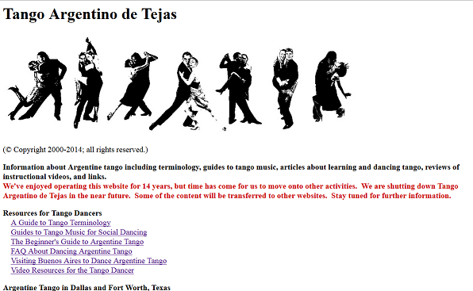

Tejastango.com is a website documenting the dance, music and culture of Argentine Tango, created in 2000 by Stephen and Susan Brown, teachers and DJs based in USA.
It features information about learning resources, teachers and providers, music and video recordings, and also reviews and recommendations on many tango products and services.
Although the name refer to “Texas” the website contains information useful for everyone interested in Tango. This website provided excellent documentation in English on the subject, at a time when popular interest in Argentine Tango was exploding,
The website quickly rose to the top of many aspiring tangueros’ reading list. Many tango communities first learned the essentials – like how to organise a milonga – from their writing.

Due to lack of time the Browns stopped updating the website since 2013. It was 14 years of meticulous note-taking that could have been lost, had they decided to let the domain expire.
In order to keep this important legacy alive, and to support the rising popularity of tango from Asia, a tango school in Singapore have committed to maintain this domain for next few years.
We are treating this essentially as an Open Source Project. Source pages are published on Github and hosting is served from its free Github pages.
Like any open source project we plan to collaborate with contributors to develop and improve this resource.
Future plans include: updating the various guides, translation into more languages, and eventually to repurpose the guides into free books for tango teaching around the world.
Please use the Github issue tracker to submit any discussion.
Github : https://github.com/kaceo/tejastango
— Kace Ong, Abrazos Club, Singapore August 2015